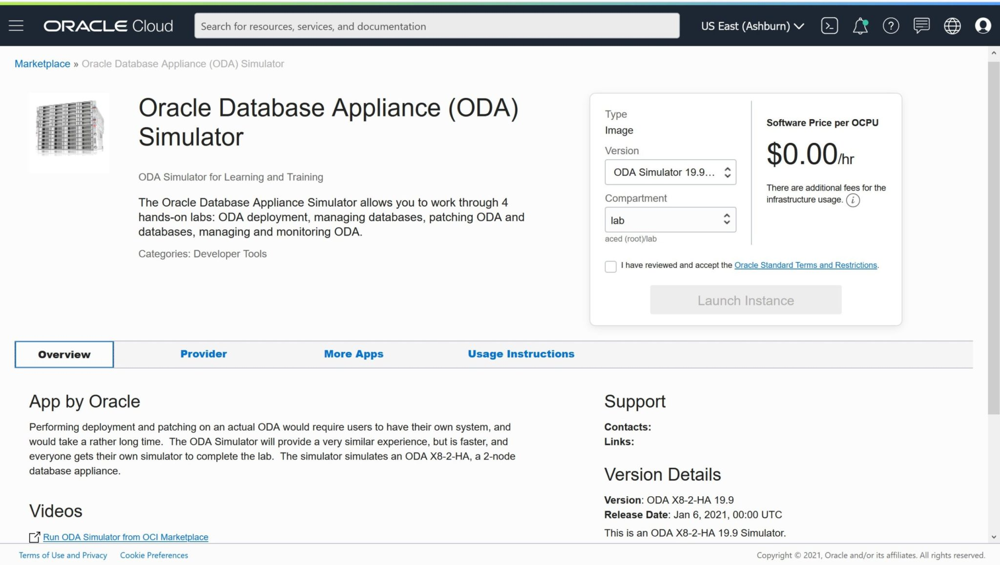
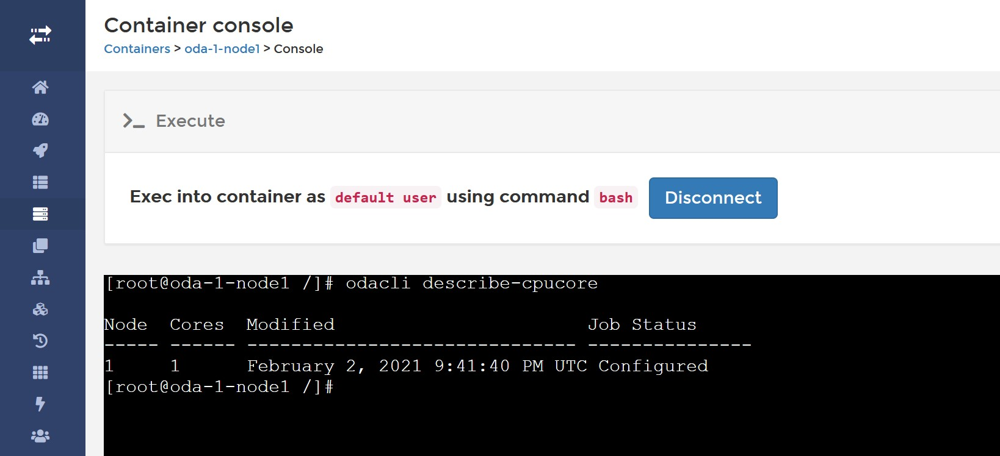

This was first published on https://www.dbi-services.com/blog/odasim/ (2021-02-03)
Republishing here for new followers. The content is related to the versions available at the publication date.
.
You want to learn and practice your ODA command line and GUI without having an ODA at home? It should be possible to run the ODA image on VirtualBox but that’s probably a hard work as it is tied to the hardware. About the configuration, you can run the Oracle Appliance Manager Configurator on your laptop but I think it is not compatible with the latest odacli. However, for a long time Oracle provides an ODA simulator and it is now available in the Oracle Cloud Marketplace for free.
Here is it page: 
https://console.us-ashburn-1.oraclecloud.com/marketplace/application/84422479/overview
You can get there by: Oracle Cloud Console > Create Compute Instance > Edit > Change Image > Oracle Images > Oracle Database Appliance (ODA) Simulator
I mentioned that this is for free. The marketplace does not allow me to run on an Always Free Eligible shape. But you may take the software and run it elsewhere (you will see the .tar.gz in the opc user home directory)
From the marketplace, the container is already running but I clean it and re-install. This does everything: it installs docker if not already there (you run all this as root).
# cleanup (incl. portainer)
sudo docker rm -f portainer ; sudo docker rmi -f portainer/portainer
yes | sudo ~/simulator*/cleanup_odasimulator_sw.sh
# setup (get images and start portainer)
sudo ~/simulator*/setup_odasimulator_sw.sh
With this you can connect by http on port 9000 to the Portainer. Of course, you need to open this in the Network Security Groups (I opened the range 9000-9100 as I’ll use those ports later). You can connect with user admin password welcome1… yes, that’s the CHANGE_ON_INSTALL password for ODA 😉
Choose Local repository and connect and you will se the users and containers created.
sudo ~/simulator*/createOdaSimulatorContainer.sh -d class01 -t ha -n 2 -p 9004 \
-i $(oci-public-ip | awk '/Primary public IP:/{print $NF}')
the -d option is a “department name”. You can put whatever you like and you can use it to create multiple classes.
-n is the number of simulators (one per participant in your class for example).
-t is ‘ha’ to create two docker containers to simulate a 2 nodes ODA HA or ‘single’ to simulate a one node ODA-lite.
The default starting port is 7094 but I start at 9004 as I opened the 9000-9100 range.
This has created the containers, storage and starts the ODA software: Zookeeper, DCS agent, DCS controller. You can see them from the Portainer console. It also creates users (the username is displayed, the password is welcome1) in portainer in the “odasimusers” team.
From the container list you have an icon ( >_ ) to go to a command line console (which is also displayed in the createOdaSimulatorContainer.sh output (“ODA cli access”) so that you can give it to your students. One for each node when you chose HA of course. It also displays the url to the ODA Console (“Browser User Interface”) at https://<public ip>:<displayed port>/mgmt/index.html for witch the user is “oda-admin” and the password must be changed at first connect. 
Here is an example with mine:
***********************************************
ODA Simulator system info:
Executed on: 2021_02_03_09_39_AM
Executed by:
ADMIN:
ODA Simulator management GUI: http://150.136.58.254:9000
Username: admin Password: welcome1
num= 5
dept= class01
hostpubip= 150.136.58.254
USERS:
Username: class01-1-node0 Password:welcome1
Container : class01-1-node0
ODA Console: https://150.136.58.254:9005/mgmt/index.html
ODA cli access: http://150.136.58.254:9000/#/containers/86a0846af46251c9389423ad440a807b83645b62a1ec893182e8d15b1d1179bd/exec
Those are my real IP addresses and those ports are opened so you can play with it if it is still up when you read it… it’s a lab.
The Portainer web shell is a possibility but you can go to the Portainer console from the machine where you have created all that you can:
[opc@instance-20210203-1009 simulator_19.9.0.0.0]$ ./connectContainer.sh -n class01-1-node0
[root@class01-1-node0 /]#
Of course you can also simply `sudo docker exec -i -t class01-1-node0 /bin/bash` – there’s nothing magic here. And then you can play with odacli:
[root@class01-1-node0 /]# odacli configure-firstnet
bonding interface is:
Using bonding public interface (yes/no) [yes]:
Select the Interface to configure the network on () [btbond1]:
Configure DHCP on btbond1 (yes/no) [no]:
INFO: You have chosen Static configuration
Use VLAN on btbond1 (yes/no) [no]:
Enter the IP address to configure : 192.168.0.100
Enter the Netmask address to configure : 255.255.255.0
Enter the Gateway address to configure[192.168.0.1] :
INFO: Restarting the network
Shutting down interface : [ OK ]
Shutting down interface em1: [ OK ]
Shutting down interface p1p1: [ OK ]
Shutting down interface p1p2: [ OK ]
Shutting down loopback interface: [ OK ]
Bringing up loopback interface: [ OK ]
Bringing up interface : [ OK ]
Bringing up interface em1: [ OK ]
Bringing up interface p1p1: Determining if ip address 192.168.16.24 is already in use for device p1p1... [ OK ]
Bringing up interface p1p2: Determining if ip address 192.168.17.24 is already in use for device p1p2... [ OK ]
Bringing up interface btbond1: Determining if ip address 192.168.0.100 is already in use for device btbond1... [ OK ]
INFO: Restarting the DCS agent
initdcsagent stop/waiting
initdcsagent start/running, process 20423
This is just a simulator, not a virtualized ODA, you need to use this address 192.168.0.100 on node0 and 192.168.0.101 on node 1
Some fake versions of the ODA software is there:
[root@class01-1-node0 /]# ls opt/oracle/dcs/patchfiles/
oda-sm-19.9.0.0.0-201020-server.zip
odacli-dcs-19.8.0.0.0-200714-DB-11.2.0.4.zip
odacli-dcs-19.8.0.0.0-200714-DB-12.1.0.2.zip
odacli-dcs-19.8.0.0.0-200714-DB-12.2.0.1.zip
odacli-dcs-19.8.0.0.0-200714-DB-18.11.0.0.zip
odacli-dcs-19.8.0.0.0-200714-DB-19.8.0.0.zip
odacli-dcs-19.8.0.0.0-200714-GI-19.8.0.0.zip
odacli-dcs-19.9.0.0.0-201020-DB-11.2.0.4.zip
odacli-dcs-19.9.0.0.0-201020-DB-12.1.0.2.zip
odacli-dcs-19.9.0.0.0-201020-DB-12.2.0.1.zip
odacli-dcs-19.9.0.0.0-201020-DB-18.12.0.0.zip
odacli-dcs-19.9.0.0.0-201020-DB-19.9.0.0.zip
On real ODA you download it from My Oracle Support but here the simulator will accept those to update the ODA repository:
odacli update-repository -f /opt/oracle/dcs/patchfiles/odacli-dcs-19.8.0.0.0-200714-GI-19.8.0.0.zip
odacli update-repository -f /opt/oracle/dcs/patchfiles/odacli-dcs-19.8.0.0.0-200714-DB-19.8.0.0.zip
You can also go to the web console where, at the first connection, you change the password to connect as oda-admin.
[root@class01-1-node0 opt]# odacli-adm set-credential -u oda-admin
User password: #HappyNewYear#2021
Confirm user password: #HappyNewYear#2021
[root@class01-1-node0 opt]#
Voila I shared my password for https://150.136.58.254:9005/mgmt/index.html 😉
You can also try the next even ports (9007, 9009…9021) and change the password yourself – I’ll leave this machine for a few days after publishing.
And then deploy the database. Here is my oda.json configuration that you can put in a file and load if you want a quick creation without typing:
{ "instance": { "instanceBaseName": "oda-c", "dbEdition": "EE", "objectStoreCredentials": null, "name": "oda", "systemPassword": null, "timeZone": "Europe/Zurich", "domainName": "pachot.net", "dnsServers": [ "8.8.8.8" ], "ntpServers": [], "isRoleSeparated": true, "osUserGroup": { "users": [ { "userName": "oracle", "userRole": "oracleUser", "userId": 1001 }, { "userName": "grid", "userRole": "gridUser", "userId": 1000 } ], "groups": [ { "groupName": "oinstall", "groupRole": "oinstall", "groupId": 1001 }, { "groupName": "dbaoper", "groupRole": "dbaoper", "groupId": 1002 }, { "groupName": "dba", "groupRole": "dba", "groupId": 1003 }, { "groupName": "asmadmin", "groupRole": "asmadmin", "groupId": 1004 }, { "groupName": "asmoper", "groupRole": "asmoper", "groupId": 1005 }, { "groupName": "asmdba", "groupRole": "asmdba", "groupId": 1006 } ] } }, "nodes": [ { "nodeNumber": "0", "nodeName": "GENEVA0", "network": [ { "ipAddress": "192.168.0.100", "subNetMask": "255.255.255.0", "gateway": "192.168.0.1", "nicName": "btbond1", "networkType": [ "Public" ], "isDefaultNetwork": true } ] }, { "nodeNumber": "1", "nodeName": "GENEVA1", "network": [ { "ipAddress": "192.168.0.101", "subNetMask": "255.255.255.0", "gateway": "192.168.0.1", "nicName": "btbond1", "networkType": [ "Public" ], "isDefaultNetwork": true } ] } ], "grid": { "vip": [ { "nodeNumber": "0", "vipName": "GENEVA0-vip", "ipAddress": "192.168.0.102" }, { "nodeNumber": "1", "vipName": "GENEVA1-vip", "ipAddress": "192.168.0.103" } ], "diskGroup": [ { "diskGroupName": "DATA", "diskPercentage": 80, "redundancy": "FLEX" }, { "diskGroupName": "RECO", "diskPercentage": 20, "redundancy": "FLEX" }, { "diskGroupName": "FLASH", "diskPercentage": 100, "redundancy": "FLEX" } ], "language": "en", "enableAFD": "TRUE", "scan": { "scanName": "oda-scan", "ipAddresses": [ "192.168.0.104", "192.168.0.105" ] } }, "database": { "dbName": "DB1", "dbCharacterSet": { "characterSet": "AL32UTF8", "nlsCharacterset": "AL16UTF16", "dbTerritory": "SWITZERLAND", "dbLanguage": "FRENCH" }, "dbRedundancy": "MIRROR", "adminPassword": null, "dbEdition": "EE", "databaseUniqueName": "DB1_GENEVA", "dbClass": "OLTP", "dbVersion": "19.8.0.0.200714", "dbHomeId": null, "instanceOnly": false, "isCdb": true, "pdBName": "PDB1", "dbShape": "odb1", "pdbAdminuserName": "pdbadmin", "enableTDE": false, "dbType": "RAC", "dbTargetNodeNumber": null, "dbStorage": "ASM", "dbConsoleEnable": false, "dbOnFlashStorage": false, "backupConfigId": null, "rmanBkupPassword": null } }
Of course the same can be done from command line. Here are my database created in this simulation:
[root@class01-1-node0 /]# odacli list-databases
ID DB Name DB Type DB Version CDB Class Shape Storage Status DbHomeID
---------------------------------------- ---------- -------- -------------------- ---------- -------- -------- ---------- ------------ ----------------------------------------
cc08cd94-0e95-4521-97c8-025dd03a5554 DB1 Rac 19.8.0.0.200714 true Oltp Odb1 Asm Configured 782c749c-ff0e-4665-bb2a-d75e2caa5568
This is the database created by this simulated deployment.
This is really nice to learn or check something without accessing a real ODA. There’s more in a video from Sam K Tan, Business Development Director at Oracle: https://www.youtube.com/watch?v=mrLp8TkcJMI and the hands-on-lab handbook to know more. And about real-live ODA problems and solutions, I have awesome colleagues sharing on our blog: https://www.dbi-services.com/blog/?s=oda and they give the following trining: https://www.dbi-services.com/trainings/oracle-database-appliance-oda/ in French, German, English, in site or remote.
{kind=link}
{kind=link}
{kind=link}